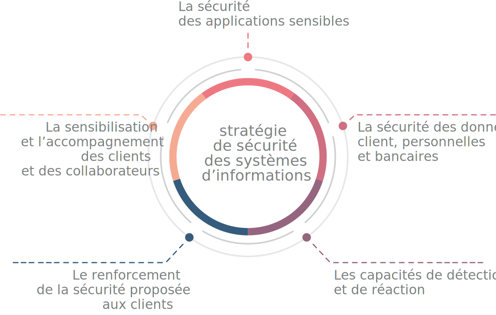

N@chtary
un portail lancé
en 2020 dédié
aux fournisseurs
Systèmes d’information
L’accélération de la digitalisation des produits bancaires implique une automatisation du
back-office ainsi qu’une agilité croissante des systèmes d’information. Consciente de cet enjeu,
CIH BANK a été l’une des premières banques marocaines à entamer son processus de transformation
digitale.
Ces dernières années, de nouveaux process ont été dématérialisés afin de gagner en efficacité et
de faciliter la relation avec les différentes parties prenantes. À fin 2020, près du quart du
réseau de CIH BANK a été couvert par la politique
« zéro archive » . En 2020 le portail
N@chtary dédié aux fournisseurs a notamment été lancé.
Protection des données et cybersécurité
Au-delà des réglementations nationales et internationales en vigueur, CIH BANK accorde une
attention toute particulière à la sécurité de ses produits et transactions ainsi qu’à la
protection des données personnelles de ses clients. La cybersécurité est en effet un enjeu de
taille au regard de ses métiers et de son positionnement de banque digitale.
La stratégie de sécurité des systèmes d’information de CIH BANK s’articule autour des cinq axes
suivants :

Siham El Ouraoui
Directrice de la Qualité - Direction
Qualité/Pôle Système d’Information

La crise sanitaire a permis de tester la résilience du Système de Management de la Qualité (SMQ) de notre banque ainsi que sa capacité à s’adapter face à un contexte d’urgence incertain et plein de perturbations. Grâce au soutien du top management, le scénario de continuité d’activité du SMQ ainsi que le nouveau programme SMQ proposé ont été validés dès avril 2020. Notre banque a ainsi rapidement fait face à la situation en prenant les dispositions nécessaires pour gérer au mieux les différentes instances du SMQ. Dans la foulée, et malgré la crise, CIH Bank a réussi à passer avec succès son audit de maintien ISO 9001 et a également déployé, dans des délais records, son nouveau système Qualité baptisé « IT9@NE ».

Adil Bindech
Directeur Adjoint
Pôle Système d’Information
Au cours de cette période de crise sanitaire, notre Banque a pu récolter le fruit de sa stratégie digitale et le virage technologique entamé depuis des années déjà. En effet, les canaux digitaux ont permis à nos clients d’effectuer la majorité de leurs opérations à distance, y compris la création de compte. CIH Bank a pu également capitaliser sur ses infrastructures centrales et ses datacenters qui étaient à jour pour l’ouverture au télétravail. Pour faire face aux cybermenaces (notamment les virus et malware), des règles strictes d’accès distant ont été adoptées. Tous ces aspects ont constitué un challenge, mais le plus important fut de réaliser tout cela dans un délai réduit et sans toujours y être préparé.